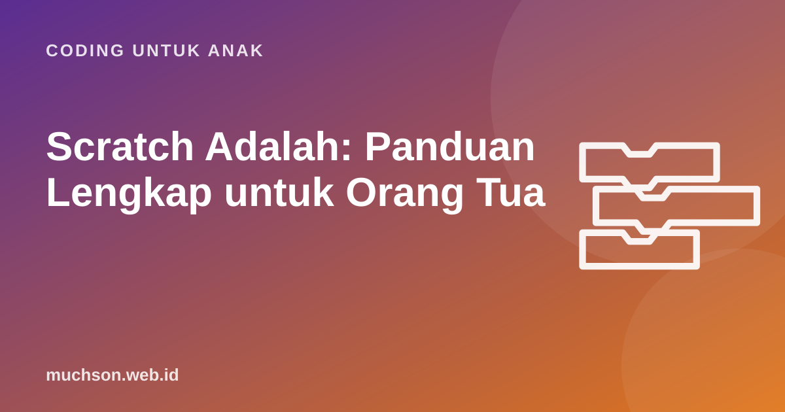

Beranda › Artikel › Coding untuk Anak
Coding untuk AnakScratch Adalah: Panduan Lengkap untuk Orang Tua
Kalau anak Anda pernah pulang sekolah bercerita tentang "kucing oranye yang bisa diprogram", besar kemungkinan itu Scratch. Panduan ini menjelaskan apa itu Scratch, kenapa dipakai jutaan sekolah, apa yang sebenarnya dipelajari anak di dalamnya, dan bagaimana Anda bisa mendampingi meski belum pernah coding sama sekali.

Scratch dalam satu paragraf
Scratch adalah bahasa pemrograman visual dan komunitas daring yang dikembangkan oleh kelompok Lifelong Kindergarten di MIT Media Lab, dan kini dikelola Scratch Foundation, sebuah yayasan nirlaba. Scratch gratis, tanpa iklan, dan tersedia dalam puluhan bahasa termasuk Bahasa Indonesia. Alih-alih mengetik kode, anak menyeret dan menyusun blok berwarna untuk membuat cerita interaktif, animasi, permainan, dan musik. Versi yang dipakai sekarang adalah Scratch 3.
Scratch memakai prinsip yang dirumuskan Mitchel Resnick, kepala kelompok tersebut: alat belajar yang baik punya lantai rendah (mudah dimulai), langit-langit tinggi (bisa dipakai untuk proyek rumit), dan dinding lebar (mendukung banyak jenis proyek, dari seni sampai sains). Itulah kenapa anak 8 tahun dan mahasiswa sama-sama bisa memakainya.
Mengenal layar Scratch
Setiap tokoh di Scratch disebut sprite. Sprite bawaan adalah kucing oranye. Setiap sprite punya skrip (tumpukan blok) sendiri, kostum (gambar yang bisa berganti untuk membuat animasi), dan suara. Panggung juga bisa punya skrip dan latar.
Warna blok menunjukkan jenisnya
| Kategori | Warna | Contoh blok | Untuk apa |
|---|---|---|---|
| Gerakan | Biru | gerak 10 langkah, putar 15 derajat | Memindahkan dan memutar sprite |
| Tampilan | Ungu | katakan Halo!, ganti kostum | Bicara, berganti gambar, efek |
| Suara | Merah muda | mainkan suara Meong | Suara dan musik |
| Kejadian | Kuning | ketika bendera diklik | Memulai program saat sesuatu terjadi |
| Kontrol | Oranye | ulangi, jika ... maka, tunggu | Mengatur alur: pengulangan dan keputusan |
| Penginderaan | Biru muda | menyentuh tepi? | Memeriksa keadaan, misalnya tabrakan |
| Operator | Hijau | +, acak 1 sampai 10 | Hitungan dan perbandingan |
| Variabel | Oranye tua | ubah skor sebesar 1 | Menyimpan nilai seperti skor dan nyawa |
Contoh skrip pertama
Skrip di atas sudah memuat tiga konsep inti pemrograman: kejadian (program mulai saat bendera diklik), urutan (blok dijalankan dari atas ke bawah), dan pengulangan. Konsep yang sama ada di bahasa profesional seperti Python dan JavaScript, hanya ditulis dengan teks.
Apa yang sebenarnya dipelajari anak?
Karen Brennan dan Mitchel Resnick (2012) memetakan pembelajaran di Scratch menjadi tiga lapis. Kerangka ini berguna untuk orang tua karena menjelaskan kenapa "hanya membuat game" sebenarnya kaya pelajaran.
Lapisan praktik sering terlupakan padahal paling berharga. Anak belajar membuat sebagian kecil, mencobanya, menemukan yang salah, lalu memperbaikinya. Kebiasaan ini berguna jauh di luar komputer: saat mengerjakan soal cerita, menyusun presentasi, bahkan membereskan kamar.
Apakah Scratch aman untuk anak?
Scratch punya situs komunitas tempat proyek bisa dibagikan, dikomentari, dan di-remix (disalin lalu dikembangkan dengan tetap menyebut pembuat aslinya). Scratch Foundation menerapkan pedoman komunitas dan moderasi, serta tidak menampilkan iklan. Beberapa hal tetap perlu orang tua ketahui:
- Akun tidak wajib. Anak bisa langsung membuat proyek di scratch.mit.edu tanpa akun. Akun hanya diperlukan untuk menyimpan proyek secara daring dan berbagi.
- Fitur komentar ada. Untuk anak yang lebih kecil, buat proyek di aplikasi Scratch offline atau tanpa membagikannya, sehingga tidak ada interaksi dengan orang asing.
- Ajarkan aturan privasi. Jangan memakai nama lengkap, nama sekolah, foto wajah, atau alamat di proyek maupun profil.
- Ada fitur laporkan. Konten atau komentar yang tidak pantas bisa dilaporkan ke moderator.
Untuk anak di bawah 10 tahun, dampingi saat membuka bagian komunitas. Ajak ia melihat proyek-proyek bagus bersama, lalu diskusikan: "Menurutmu bagaimana cara membuatnya?"
Cara mendampingi tanpa harus bisa coding
Anda tidak perlu menguasai Scratch untuk menjadi pendamping yang hebat. Yang dibutuhkan anak adalah penonton yang penasaran. Gunakan pertanyaan terbuka berikut, satu atau dua saja per sesi:
Hindari mengambil alih mouse. Godaan untuk "membantu sebentar" memang besar, tetapi setiap kali orang dewasa mengambil alih, anak kehilangan kesempatan menemukan jawabannya sendiri. Kalau anak macet, tanyakan "sudah coba apa saja?" dan "blok mana yang menurutmu salah?"
Belajar Scratch sendiri atau ikut kelas?
Scratch menyediakan tutorial resmi yang bagus di menu Tutorial. Untuk anak yang mandiri dan suka bereksplorasi, itu sudah cukup sebagai awal. Tantangan muncul ketika anak ingin naik level: konsep seperti variabel, koordinat, clone, dan logika game butuh urutan belajar yang jelas. Tanpa urutan, anak sering melompat dari tutorial ke tutorial tanpa benar-benar memahami.
Itulah alasan saya membuat PixelKode: 32 pelajaran berurutan dari algoritma sampai clone, dengan Studio yang sama persis dengan Scratch 3. Karena bloknya sama, apa pun yang dipelajari anak langsung terpakai di Scratch asli, dan proyeknya bisa dibuka di sana. Bagi orang tua, yang terpenting bukan alatnya, melainkan anak terus berkarya dengan pemahaman yang bertambah.
Tanya jawab
Apakah Scratch gratis?
Scratch untuk usia berapa?
Apakah Scratch bisa berbahasa Indonesia?
Apakah Scratch bisa dipakai tanpa internet?
Apa bedanya Scratch dengan game biasa?
Sumber dan bacaan lanjut
- Scratch, situs resmi
- Scratch untuk orang tua
- Brennan, K., & Resnick, M. (2012). New frameworks for studying and assessing the development of computational thinking
- Scratch Foundation
- Pedoman Komunitas Scratch